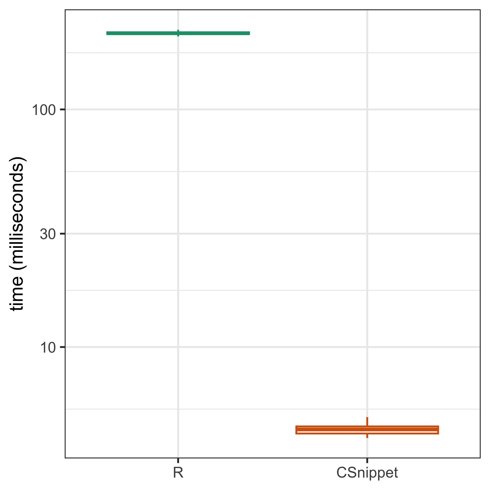
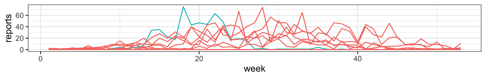

library(pomp)
Csnippet("
DS = -Beta*S*I/N;
DI = Beta*S*I/N - I*Gamma;
DR = I*Gamma;
") -> sir_det_skelLesson 2: Simulation of stochastic dynamic models
Objectives
This tutorial develops some classes of dynamic models relevant to biological systems, especially for epidemiology.
- Dynamic systems can often be represented in terms of flows between compartments.
- We develop the concept of a compartment model for which we specify rates for the flows between compartments.
- We show how deterministic and stochastic versions of a compartment model are derived and related.
- We introduce Euler’s method to simulate from dynamic models.
- We specify deterministic and stochastic compartment models in pomp using Euler method simulation.
Compartmental models
Example: the SIR model
A basic compartment model: The SIR model
We develop deterministic and stochastic representations of a susceptible-infected-recovered (SIR) system, a fundamental class of models for disease transmission dynamics.
We set up notation applicable to general compartment models (Bretó et al. 2009).
We suppose that each arrow has an associated rate, so here there is a rate \(\mu_{SI}(t)\) at which individuals in \(S\) transition to \(I\), and \(\mu_{IR}\) at which individuals in \(I\) transition to \(R\).
To account for demography (births/deaths/migration) we allow the possibility of a source and sink compartment, which is not usually represented on the flow diagram. We write \(\mu_{BS}\) for a rate of births into \(S\), and denote mortality rates by \(\mu_{SD}\), \(\mu_{ID}\), \(\mu_{RD}\).
The rates may be either constant or time-varying.
For the simplest SIR model, ignoring demography, we set \[ \mu_{BS}=\mu_{SD}=\mu_{ID}=\mu_{RD}=0.\]
Notation
General notation for compartment models
To develop a systematic notation, it turns out to be convenient to keep track of the flows between compartments as well as the number of individuals in each compartment:
\(N_{SI}(t)\): the number of individuals who have transitioned from \(S\) to \(I\) by time \(t\). We say that \(N_{SI}(t)\) is a counting process.
\(N_{IR}(t)\): the number of individuals transitioning from \(I\) to \(R\) by time \(t\).
To include demography, we could keep track of birth and death events by the counting processes:
\(N_{BS}(t)\): the number of newborns into \(S\) by time \(t\).
\(N_{SD}(t)\), \(N_{ID}(t)\), \(N_{RD}(t)\): the number of deaths from \(S\), \(I\), and \(R\) compartments by time \(t\), respectively.
- For discrete population compartment models, the flow counting processes are non-decreasing and integer valued.
- For continuous population compartment models, the flow counting processes are non-decreasing and real valued.
Compartment model from counting processes
The numbers of people in each compartment can be computed via these counting processes. Ignoring demography, we have: \[\begin{equation*} \begin{aligned} S(t) &= S(0) - N_{SI}(t) &\\ I(t) &= I(0) + N_{SI}(t) &- N_{IR}(t) \\ R(t) &= R(0) &+ N_{IR}(t) \end{aligned} \end{equation*}\]
These equations represent conservation of individuals or what goes in must come out.
Ordinary differential equation interpretation
Together with initial conditions specifying \(S(0)\), \(I(0)\) and \(R(0)\), we just need to write down ordinary differential equations (ODEs) for the flow counting processes. These are: \[\begin{equation*} \begin{aligned} \deriv{N_{SI}}{t} &= \mu_{SI}(t)\,S(t)\\ \deriv{N_{IR}}{t} &= \mu_{IR}\,I(t) \end{aligned} \end{equation*}\]
Common notation for a deterministic SIR model
- \(\beta\): transmission rate, encompasses the frequency of contacts and transmission probability between individuals
- \(\gamma\): recovery rate, rate that infected individuals become “uninfectious”
- Duration of infectiousness on average is \(\frac{1}{\gamma}\)
- \(S + I + R = N\)
Common notation for a deterministic SIR model - equations
\[\begin{equation*} \begin{aligned} \deriv{S}{t} &= - \beta S \frac{I}{N}\\ \deriv{I}{t} &= \beta S \frac{I}{N} - \gamma * I \\ \deriv{R}{t} &= \gamma I \end{aligned} \end{equation*}\]Common notation for a deterministic SIR model - Skeleton code
\[\begin{equation*}
\begin{aligned}
\deriv{S}{t} &= - \beta S \frac{I}{N}\\
\deriv{I}{t} &= \beta S \frac{I}{N} - \gamma * I \\
\deriv{R}{t} &= \gamma I
\end{aligned}
\end{equation*}\]
Stochastic simulations
Stochastic Differential Equations (SDEs)
By including randomness in the ODE system, we can have the stochastic differential equation (SDE) system.
For example, for the ODE \(\deriv{x}{t}=h(x)\), a natural way to add stochastic variation is \[ \deriv{X}{t} = h(X)+\sigma\,\deriv{B}{t} \] where \(\{B(t)\}\) is Brownian motion and so \(dB/dt\) is Brownian noise.
The simple counting process and the reactions
A deterministic SIR model has a fixed trajectory, indicating that the number of each compartment at any time is fixed with given parameters and intial states; thus the transitions between compartments are fixed at any time.
A stochastic SIR model, in the contrary, the trajectory and the transitions between compartments at any time are stochastic.
Recall \(N_{SI}(t)\) and \(N_{IR}(t)\) are counting processes, indicating the number of total individuals transitioned from \(S\) to \(I\) and \(I\) to \(R\) by time \(t\), respectively.
A simple counting process is one which cannot count more than one event at a time.
We then can relate the counting process to the common SIR reactions with the corresponding probabilities.
Note that we are using little o notation and we write \(h(\delta)=o(\delta)\) to mean \(\lim_{\delta\to 0} \frac{h(\delta)}{\delta} = 0\).
| Counting | Reaction | Probability |
|---|---|---|
| \(N_{SI}(t+\delta)=N_{SI}(t)+1\) | \(S \to S - 1\) \(I \to I + 1\) | \(\beta S(t) I(t) \delta / N + o(\delta)\) |
| \(N_{SI}(t+\delta)=N_{SI}(t)\) | \(1-\beta S(t) I(t) \delta / N + o(\delta)\) | |
| \(N_{IR}(t+\delta)=N_{IR}(t)+1\) | \(I \to I - 1\) \(R \to R + 1\) | \(\gamma I(t) \delta + o(\delta)\) |
| \(N_{IR}(t+\delta)=N_{IR}(t)\) | \(1 - \gamma I(t) \delta + o(\delta)\) |
The Euler’s method
- When referring the counting and its corresponding probability in Table 1, it is obvious that we can derive a continuous time Markov chain (CTMC) for the SIR model:
\[ \begin{aligned} \pr\big[N_{SI}(t+\delta)&\equals N_{SI}(t)+1\big] &\equals& \beta \, S(t)\, I(t) / N\, \delta + o(\delta), \\ \pr\big[N_{IR}(t+\delta)&\equals N_{IR}(t)+1\big] &\equals& \gamma \, I(t) \delta + o(\delta). \end{aligned} \]
- For \(k=1,2,...\), by discretizing this CTMC with small time step \(\delta\), we can derive a numerical solution with the state variables \(\tilde S(k\delta)\), \(\tilde I(k\delta)\), \(\tilde R(k\delta)\):
\[\begin{array}{lcl} \tilde S(k\delta)&=& S(0) - \tilde N_{SI}(k\delta) \\ \tilde I(k\delta)&=& I(0) + \tilde N_{SI}(k\delta) - \tilde N_{IR}(k\delta) \\ \tilde R(k\delta) &=& R(0) + \tilde N_{IR}(k\delta) \end{array}\]
- \(\tilde N_{SI}(t)\) and \(\tilde N_{IR}(t)\): the numerical solutions for \(N_{SI}(t)\) and \(N_{IR}(t)\)
Let current \(t=k\delta\), consider the small time interval \(t\le \tau \le t+\delta\).
Assume that the gradients \(\deriv{N_{SI}}{t} = \mu_{SI}(t)\,S(t)\) and \(\deriv{N_{IR}}{t} = \mu_{IR}\,I(t)\) are approximately constant
We can have \(\tilde N_{SI}(t+\delta)\) and \(\tilde N_{IR}(t+\delta)\) as:
\[ \begin{array}{lcl} \tilde N_{SI}(t+ \delta) &=& \tilde N_{SI}(t) + \delta\,\beta\, S(t)\,I(t)\,/ N \\ \tilde N_{IR}(t + \delta) &=& \tilde N_{IR}(t) + \delta\,\gamma\,I(t) \\ \end{array} \]
Now we can include stochastic variation in the Euler’s method.
- Recall the SDE:
\[ \deriv{X}{t} = h(X)+\sigma\,\deriv{B}{t} \]
where \(\{B(t)\}\) is Brownian motion and so \(dB/dt\) is Brownian noise.
- An Euler approximation \(\tilde X(t)\) within the small time interval \([t,t+\delta]\) and \(t=k\delta\) for \(k=0,1,2,\dots\) is \[ \tilde{X}\big( \,t + \delta\,\big) = \tilde{X}(t) + \delta\, h\big(\, \tilde{X}(t)\,\big) + \sigma \sqrt{\delta} \, Z_k \]
where \(Z_1,Z_2,\dots\) are independent standard normal random variables, i.e., \(Z_k\sim \dist{Normal}{0,1}\).
- Although SDEs are often considered an advanced topic in probability, the Euler approximation doesn’t demand much more than familiarity with the normal distribution.
Now we can consider applying the Euler’s method for a stochastic SIR model:
- A binomial approximation with exponential transition probabilities.
\[ \begin{aligned} \tilde N_{SI}(t+ \delta) &= \tilde N_{SI}(t) + \mathrm{Binomial}\big[\tilde S(t),1-\exp\big\{-\beta\,\tilde I(t)/ N\,\delta\big\}\big], \\ \tilde N_{IR}(t + \delta) &= \tilde N_{IR}(t) + \mathrm{Binomial}\big[\tilde I(t), 1-\exp\big\{-\delta\,\gamma\big\}\big], \\ \end{aligned} \]
where \(\mathrm{Binomial}(n,p)\) is a binomial random variable with mean \(np\) and variance \(np(1-p)\). Here, \(p=1-\exp\big\{-\beta\,\tilde I(t)/ N\,\delta\big\}\) and \(p=1-\exp\big\{-\delta\,\gamma\big\}\), respectively.
The following are two other ways for a stochastic SIR model with the Euler’s approximation, what they are not as good as the previous one?
A Poisson approximation. \[\tilde N_{SI}(t+\delta)= \tilde N_{SI}(t) + \mathrm{Poisson}\big[\beta\,\tilde S(t)\,\tilde I(t) / N\, \delta\big],\] where \(\mathrm{Poisson}(\mu)\) is a Poisson random variable with mean \(\mu=\beta\,\tilde S(t)\,\tilde I(t) / N\, \delta\).
A binomial approximation, \[\tilde N_{SI}(t+\delta) = \tilde N_{SI}(t) + \mathrm{Binomial}\big[\tilde S(t),\beta\,\tilde I(t) / N \, \delta\big].\]
The Gillespie method
Numerical methods, such as the Euler’s method, are approximations to the process by discretizing time using small time step \(\delta\)
However, the Gillespie method is the exact Stochastic Simulation Method, which leverages the Markov Property as well.
In Table 1, by consider the reactions and the probabilities, we can derive the Gillespie algorithm for the stochastic SIR model.
With initialization, \(S(0)\), \(I(0)\), and \(R(0)\), at current time \(t\):
Compute the total event rates: \(\lambda_1 = \beta\,S(t)\,I(t)/N, \lambda_2 = \gamma\,I(t), \lambda = \lambda_1 + \lambda_2\)
Compute the waiting time \(\Delta t \sim \mathrm{Exponential}(\lambda)\)
Select the reactions by sampling from probabilities \(\left(\frac{\lambda_1}{\lambda}, \frac{\lambda_2}{\lambda}\right)\)
Update the states from the selected reaction and update the time \(t\to t+\Delta t\)
Repeat 1-4 till the end of the simulation time
Even though the Gillespie is an exact stochastic simulation method, it has limitations such as:
Computational Intensity: For complex systems with many reactions, the Gillespie method can become computationally expensive.
Rare Events: For systems where some reactions are very rare, a large number of simulation steps may be needed to capture these events, making the method slow.
Euler vs. Gillespie
- Why and When would you prefer an implementation of Gillespie’s algorithm to an Euler solution?
Worked solution to the Exercise
- Numerically, Gillespie’s algorithm is often approximated using so-called tau-leaping methods. These are closely related to Euler’s approach. In this context, the Euler method has sometimes been called tau-leaping.
Compartment models in pomp: The Consett Measles outbreaks
Let’s look at outbreak of measles in the town of Consett in England in 1948:
the town had population of 38820,
with 737 births over the course of the year.
library(tidyverse)
read_csv("Measles_Consett_1948.csv") |>
select(week,reports=cases) -> meas
meas |> as.data.frame() |> head(n=3) week reports
1 0
2 0
3 2week: time, indicates that the data are counted weeklyreportsvariable: incidence, counts the number of reports of new measles cases each week
The SIR as a POMP model for measles
The unobserved states: \(S(t)\), \(I(t)\), \(R(t)\), the numbers of individuals in the S, I, and R compartments, respectively.
The constant population size: \(N=S(t)+I(t)+R(t)\), as fixed at the known population size of 38,000.
Flows move from one compartment to another over any particular time interval are modeled as stochastic processes.
Demographic stochasticity: each individual in a compartment at any given time faces the same risk of exiting the compartment; the unavoidable randomness that arises from chance events occurring in a discrete and finite population.
Recall the application of the Euler’s method to a stochastic SIR model.
- \(\Delta N_{SI}\) and \(\Delta N_{IR}\): the flows from S to I and from I to R over interval \(\Delta t\), respectively:
\[ \begin{aligned} \Delta N_{SI} &\sim \mathrm{Binomial}\left(S, 1-e^{-\beta\frac{I}{N}\Delta t}\right),\\ \Delta N_{IR} &\sim \mathrm{Binomial}\left(I, 1-e^{-\gamma\Delta t}\right). \end{aligned} \]
- Implement the dynamics in
pompas an R function:
sir_stoch <- function (S, I, R, N, Beta, Gamma, delta.t, ...) {
dN_SI <- rbinom(n=1,size=S,prob=1-exp(-Beta*I/N*delta.t))
dN_IR <- rbinom(n=1,size=I,prob=1-exp(-Gamma*delta.t))
S <- S - dN_SI
I <- I + dN_SI - dN_IR
R <- R + dN_IR
c(S = S, I = I, R = R)
}- Note that, for a deterministic SIR model:
dN_SI <- Beta*S*I/N*delta.t
dN_IR <- Gamma*I*delta.tWe can implement the initialization function with the following assumptions:
Assume the dynamics starts at week 0, \(t0=0\).
At \(t0\), assume the initial number of infection is 1, that is \(I=1\).
The initial number of susceptible is unknown, so we’ll treat this fraction, \(\eta\), as a parameter to be estimated.
sir_rinit <- function (N, Eta, ...) {
c(S = round(N*Eta), I = 1, R = round(N*(1-Eta)))
}With the initialization function sir_rinit and the process function sir_stoch, we can build a pomp object with these two components and the data:
library(pomp)
meas |>
pomp(
times="week",t0=0,
rprocess=euler(sir_stoch,delta.t=1/7),
rinit=sir_rinit
) -> measSIR- Question: what do
times="week"anddelta.t=1/7indicate?
Assume the observations, the
reports, result from a process by which new infections are diagnosed in a hospital and reported with probability \(\rho\).The diagnosed infections are immediately hospitalized, therefore, they have, presumably, a much lower transmission rate; let’s assume each week’s reports as being related to the number of individuals who have moved from I to R over the course of that week.
We then define a new variable, \(H\), that tracks these daily counts.
We now can modify the R functions to incorporate the new variable \(H\):
sir_stoch <- function (S, I, R, N, Beta, Gamma, delta.t, H, ...) {
dN_SI <- rbinom(n=1,size=S,prob=1-exp(-Beta*I/N*delta.t))
dN_IR <- rbinom(n=1,size=I,prob=1-exp(-Gamma*delta.t))
S <- S - dN_SI
I <- I + dN_SI - dN_IR
R <- R + dN_IR
H <- H + dN_IR
c(S = S, I = I, R = R, H = H)
}
sir_rinit <- function (N, Eta, ...) {
c(S = round(N*Eta), I = 1, R = round(N*(1-Eta)), H = 0)
}Note that, we are so far accounting for the flows between compartments by days, while the reports are weekly cases. Since we want \(H\) to tally only the incidence over the week, we’ll need to reset it to zero at the beginning of each week. Thus, in pomp terminology, \(H\) is an accumulator variable. We accomplish this using the accumvars argument to pomp when build the object:
measSIR |>
pomp(
rprocess=euler(sir_stoch,delta.t=1/7),
rinit=sir_rinit,
accumvars="H"
) -> measSIR- Question: what does that mean by running a
pompfunction with thepompobjectmeasSIR?
Last but not least, we need to define a measurement model to relate the observations, reports, to the unobserved accumulative state, \(H\).
- We will model the data by a negative binomial variable, \[\mathrm{reports}_t \sim \dist{NegBin}{\rho\,H(t),k}.\] with mean \(\rho\,H(t)\) and variance \(\rho H(t)+ \big(\rho H(t)\big)^2/k\). The binomial distribution does not have a separate variance parameter.
- To include the observations in the model, we must write either a
dmeasureor anrmeasurecomponent, or both:
sir_dmeas <- function (reports, H, Rho, k, log, ...) {
dnbinom(x=reports, size=k, mu=Rho*H, log=log)
}
sir_rmeas <- function (H, Rho, k, ...) {
c(reports=rnbinom(n=1, size=k, mu=Rho*H))
}Eventually, we can add these two components to the previous measSIR object to update the dmeasure and rmeasure arguments:
measSIR |>
pomp(
rmeasure=sir_rmeas,
dmeasure=sir_dmeas
) -> measSIRC snippets
Specifying model components using C snippets
Although we can always specify basic model components using
Rfunctions, as above, we`ll typically want the computational speed-up that we can obtain only by using compiled native code.pomp provides a facility for doing so with ease, using C snippets.
C snippets are small pieces of C code used to specify basic model components.
- For example, a C snippet encoding the rprocess for an
sirmodel is as follows.
sir_stoch <- Csnippet("
double dN_SI = rbinom(S,1-exp(-Beta*I/N*dt));
double dN_IR = rbinom(I,1-exp(-Gamma*dt));
S -= dN_SI;
I += dN_SI - dN_IR;
R += dN_IR;
H += dN_IR;
")Note:
It is necessary to define the data type for the real values
dN_SIanddN_IRasdouble. The data type for states does not need to be defined at this stage and will be addressed later.rbinomis a built-in function used to generate random values from a binomial distribution. For additional built-in distributions in R, you can refer to this Rmath.h document.Remember to add a semicolon (
;) after each line to ensure proper syntax.C snippets for the initializer and measurement model are:
sir_rinit <- Csnippet("
S = nearbyint(Eta*N);
I = 1;
R = nearbyint((1-Eta)*N);
H = 0;
")
sir_dmeas <- Csnippet("
lik = dnbinom_mu(reports,k,Rho*H,give_log);
")
sir_rmeas <- Csnippet("
reports = rnbinom_mu(k,Rho*H);
")No need to define the type for likelihood
(lik)here, as it is already predefined.nearbyintis a built-in function used to find the closest integer to a given value.reportsis the variable name specified in your dataset.
- A call to
pompreplaces the basic model components with these, much faster, implementations:
measSIR |>
pomp(
rprocess=euler(sir_stoch,delta.t=1/7),
rinit=sir_rinit,
rmeasure=sir_rmeas,
dmeasure=sir_dmeas,
accumvars="H",
statenames=c("S","I","R","H"),
paramnames=c("Beta","Gamma","N","Eta","Rho","k")
) -> measSIR_CNote that, when using C snippets, one has to tell pomp which of the variables referenced in the C snippets are state variables and which are parameters. This is accomplished using the
statenamesandparamnamesarguments.We can tell from the summary table that CSnippet is approximate 50 times faster than R.

Choosing parameters
Guessing plausible parameter values
To check the code is working properly, we simulate. This requires us to assign parameters. A little thought will get us some ballpark estimates.
Recall that \(\Rzero\) is the expected number of secondary infections resulting from one primary infection introduced into a fully susceptible population. For an SIR infection, one has that \(\Rzero\approx\frac{L}{A}\), where \(L\) is the lifespan of a host and \(A\) is the mean age of infection. Analysis of age-stratified serology data establish that the mean age of infection for measles during this period was around 4–5yr (Anderson and May 1991). Assuming a lifespan of 60–70yr, we have \(\Rzero\approx 15\).
The basic theory of SIR epidemics gives the final-size equation, \[\Rzero = -\frac{\log{(1-f)}}{f},\] where \(f\) is the final size of the epidemic—the fraction of those susceptible at the beginning of the outbreak who ultimately become infected. For \(\Rzero>5\), this equation predicts that \(f>0.99\).
In the data, it looks like there were a total of \(521\) infections.
Assuming 50% reporting, we have that \(S_0\approx1042\), so that \(\eta=\frac{S_0}{N}\approx0.027\).If the infectious period is roughly 2 weeks, then \(1/\mu_{IR} \approx 2~\text{wk}\) and \(\beta = \mu_{IR}\,\Rzero \approx 7.5~\text{wk}^{-1}\).
measSIR |>
simulate(params=c(Beta=7.5,Gamma=0.5,Rho=0.5,k=10, Eta=0.03,N=38000),
nsim=20,format="data.frame",include.data=TRUE) |>
ggplot(aes(x=week,y=reports,group=.id,color=.id=="data")) +
geom_line() + guides(color="none")Exercises
Exercise I: Explore the SIR model
Fiddle with the parameters to see if you can’t find a model for which the data are a more plausible realization.
Worked solutions I: Explore the SIR model
In the simulated outbreaks, the overall incidence is much too low, and the outbreak dies out immediately. We might try increasing the force of infection:
measSIR |>
simulate(params=c(Beta=25,Gamma=0.5,Rho=0.5,k=10,Eta=0.03,N=38000),
nsim=20,format="data.frame",include.data=TRUE) |>
ggplot(aes(x=week,y=reports,group=.id,color=.id=="data")) +
geom_line() + guides(color="none")Taking it farther…
measSIR |>
simulate(params=c(Beta=40,Gamma=0.5,Rho=0.5,k=10,Eta=0.03,N=38000),
nsim=20,format="data.frame",include.data=TRUE) |>
ggplot(aes(x=week,y=reports,group=.id,color=.id=="data")) +
geom_line() + guides(color="none")While this increases the overall incidence, the epidemic is now peaking too quickly. To counteract this, we might try reducing the recovery rate.
measSIR |>
simulate(params=c(Beta=40,Gamma=0.2,Rho=0.5,k=10,Eta=0.03,N=38000),
nsim=20,format="data.frame",include.data=TRUE) |>
ggplot(aes(x=week,y=reports,group=.id,color=.id=="data"))+
geom_line() + guides(color="none")Additionally, we might have a look at the effects of changing the initial susceptible fraction, \(\eta\):
measSIR |>
simulate(params=c(Beta=15,Gamma=0.5,Rho=0.5,k=10,Eta=0.06,N=38000),
nsim=20,format="data.frame",include.data=TRUE) |>
ggplot(aes(x=week,y=reports,group=.id,color=.id=="data")) +
geom_line() + guides(color="none")Exercise II: Extend the SIR model to SEIR model
Below is a diagram of the so-called SEIR model. This differs from the SIR model in that infected individuals must pass a period of latency before becoming infectious.
Modify the codes above to construct a pomp object containing the Consett measles data and an SEIR model. Perform simulations as above and adjust parameters to get a sense of whether improvement is possible by including a latent period.
Worked solutions II: The SEIR model
The existing code may be modified as follows:
seir_stoch <- Csnippet("
double dN_SE = rbinom(S,1-exp(-Beta*I/N*dt));
double dN_EI = rbinom(E,1-exp(-Sigma*dt));
double dN_IR = rbinom(I,1-exp(-Gamma*dt));
S -= dN_SE;
E += dN_SE - dN_EI;
I += dN_EI - dN_IR;
R += dN_IR;
H += dN_IR;
")seir_init <- Csnippet("
S = nearbyint(Eta*N);
E = 0; I = 1;
R = nearbyint((1-Eta)*N);
H = 0;
")
measSIR |>
pomp(
rprocess=euler(seir_stoch,delta.t=1/7),
rinit=seir_init,
paramnames=c("N","Beta","Sigma","Gamma","Rho","Eta","k"),
statenames=c("S","E","I","R","H")
) -> measSEIRUsing the rough estimate that the latent period in measles is 8–10da, we take \(\sigma\sim 0.8\)wk-1 and \(\gamma\sim 1.3\)wk-1 (roughly the same generation time as before).
measSEIR |>
simulate(params=c(Beta=30,Sigma=0.8,Gamma=1.3,
Rho=0.5,k=10,Eta=0.06,N=38000),
nsim=20,format="data.frame",include.data=TRUE) |>
ggplot(aes(x=week,y=reports,group=.id,color=.id=="data")) +
geom_line() + guides(color="none")
Again one can increase the force of infection:
measSEIR |>
simulate(params=c(Beta=40,Sigma=0.8,Gamma=1.3,
Rho=0.5,k=10,Eta=0.06,N=38000),
nsim=20,format="data.frame",include.data=TRUE) |>
ggplot(aes(x=week,y=reports,group=.id,color=.id=="data")) +
geom_line() + guides(color="none")References
References
Anderson, R. M., and R. M. May. 1991. Infectious Diseases of Humans. Oxford: Oxford Univesity Press.
Bretó, Carles, Daihai He, Edward L. Ionides, and Aaron A. King. 2009. “Time Series Analysis via Mechanistic Models.” Ann Appl Stat 3 (1): 319–48. https://doi.org/10.1214/08-AOAS201.
License, acknowledgments, and links
This lesson is prepared for the Simulation-based Inference for Epidemiological Dynamics module at the Summer Institute in Statistics and Modeling in Infectious Diseases, SISMID.
The materials build on previous versions of this course and related courses.
Licensed under the Creative Commons Attribution-NonCommercial license. Please share and remix non-commercially, mentioning its origin.
Produced with R version 4.4.0 and pomp version 5.9.
Compiled on 2024-07-24.